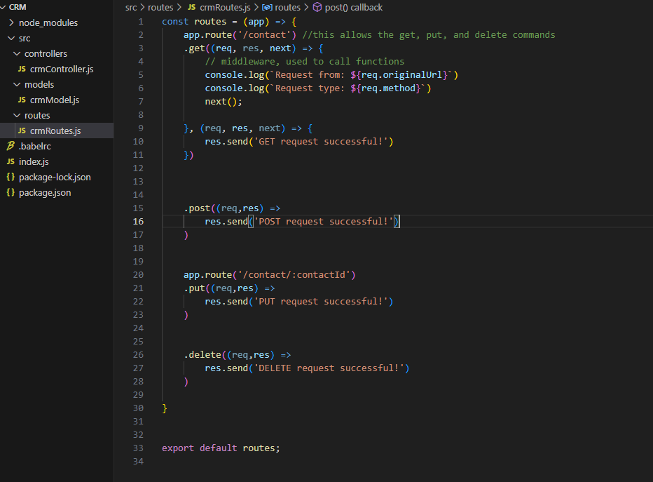
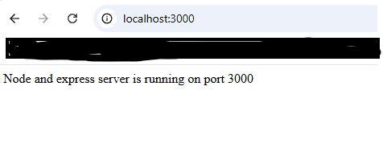
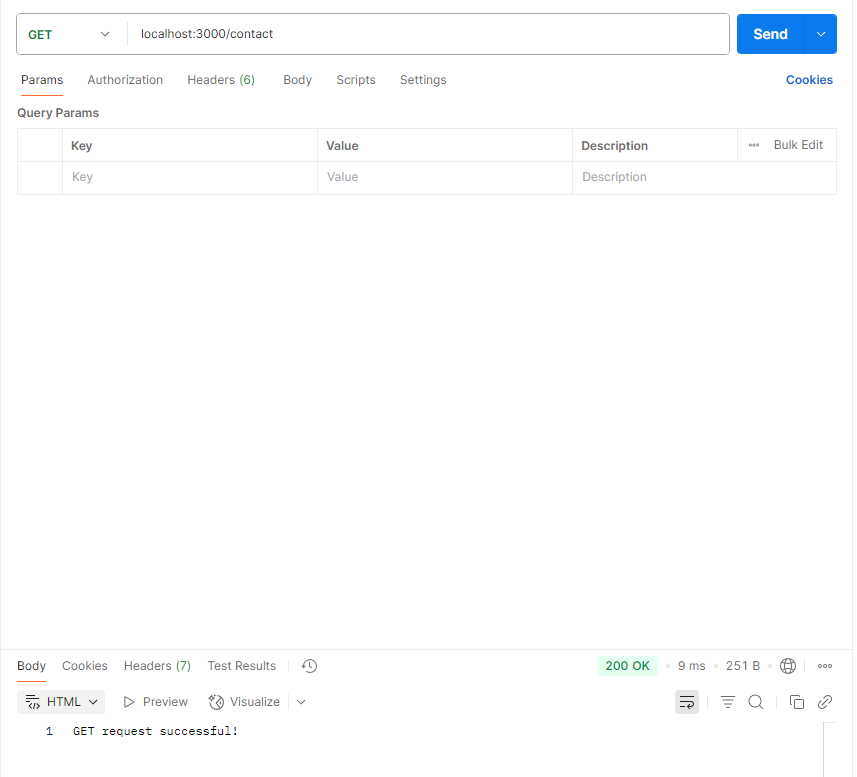

7/24/2025
What did you do last week?
What do you plan to do this week?
Are there any impediments in your way?
Reflection on the process you used last week, how can you make the process work better?
Routes:
Local Server:
Get Request Example:
7/20/2025
What did you do last week? Last week, I started setting up my server and installed all the necessary packages for my coding environment. I’ll be using JavaScript for my API, which will be a bit of a learning curve since I have limited experience with the language. To run everything, I’ll be working with Node.js and Express. I also set up my MongoDB server, which I’ll be using to pull data from. Finally, I made sure Postman is ready to go for when I start testing my APIs.
What do you plan to do this week? Outside of continuing to work on my API, I also need to update my website, so my goal going into this week is to get all my weeks up to date with what I've posted on here (I'm a couple behind) and I'd like to clean up my site a bit as well so the documentation looks better as we enter the final weeks of this project.
Are there any impediments in your way? The next few weeks are actually pretty relaxing for me in terms of other obligations, so it's my hope that I can really devote a good amount of time to this project.
Reflection on the process you used last week, how can you make the process work better? I just need to make sure I keep committing time, even when I'm not motivated, a little goes a long way.
7/13/2025
What did you do last week? Great week last week! Spent some time diving into freecodecamp's API for beginners, which lead me to playing with some open API's that other companies offer. I had no idea how extensively integrated API's are into not only most software's, but also other systems like out public entities (public transportation, safety, construction, etc)
What do you plan to do this week? Dive more into the open API's, see how they function as I continue learn about them.
Are there any impediments in your way? None!
Reflection on the process you used last week, how can you make the process work better? No real changes here, I've been a bit unorganized, but that was just due to holiday traveling.
7/6/2025
What did you do last week? Started watching some videos on API and began reading a text book "Coding Clean, Reliable, and Safe REST APIs" to familiarize myself with HTTP and the types of requests I'll be testing. I'm not fully through chapter 1, but I'm just over halfway.
What do you plan to do this week? Work through chapter 1, and skim chapter 2 and 3 of the book.
Are there any impediments in your way? Nothing this next week!
Reflection on the process you used last week, how can you make the process work better? No holiday's next week so I should have more time to work on the project.
6/29/2025
What did you do last week? Last week was focused on studying for my exam for my other class and finishing up a lab, so I'm a bit behind, but I did begin researching rest API's by working through a handful of articles and videos.
What do you plan to do this week? My goal this week is to dive a little deeper into Rest API's and see how I can begin coding a pull request that would pull data from my work demo site.
Are there any impediments in your way? Holiday! I'm leaving on the 3rd and won't be back until the 6th, so it may not be practical to get a ton of work done, but I plan to do my best!
Reflection on the process you used last week, how can you make the process work better? Not much to change here, my new goal is to try and introduce a lot of this information I'm learning each day. Even if it's just a half hour of work at some point during the day.
6/22/2025
What did you do last week? Last week I worked on getting the rest of the essentials of my personal website set up including creating a downloadable PDF of my resume.
What do you plan to do this week? Get my postman account set up - Using freecodecamps blog on postman to help me get going with postman as well.
Are there any impediments in your way? No real impediments, just committing the time where I can!
Reflection on the process you used last week, how can you make the process work better? Delegate a little time at the beginning of the week to work on my project vs trying to invest all of my time at the end of the week.
6/15/2025
What did you do last week? Focused on getting my personal website up to date.
6/5/2025
What did you do last week? Worked on my project proposal.